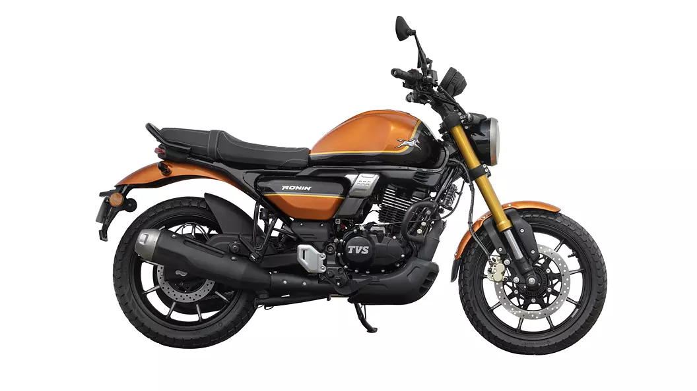

TVS

lights
Announce your arrival with the unique T-Face pilot lamp. Or light up any adventure using the Powerfull all LED headlamp. Light up any adventure using the powerfull all-LED headlamp. And let those LED turn signal lamps keep you safer than ever, but with style!